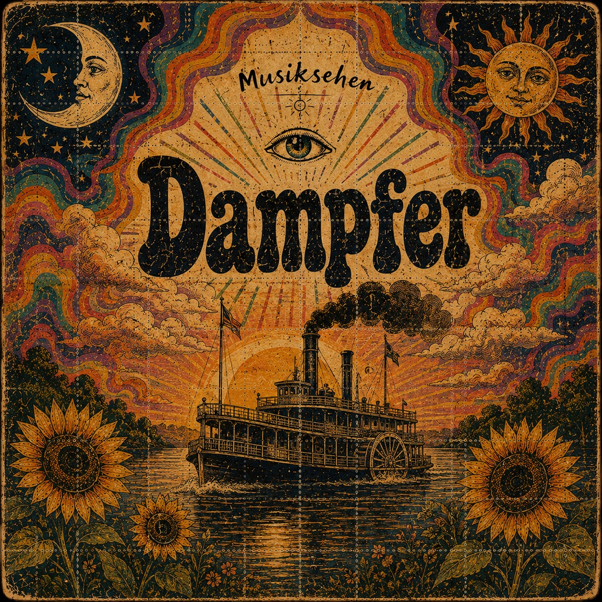
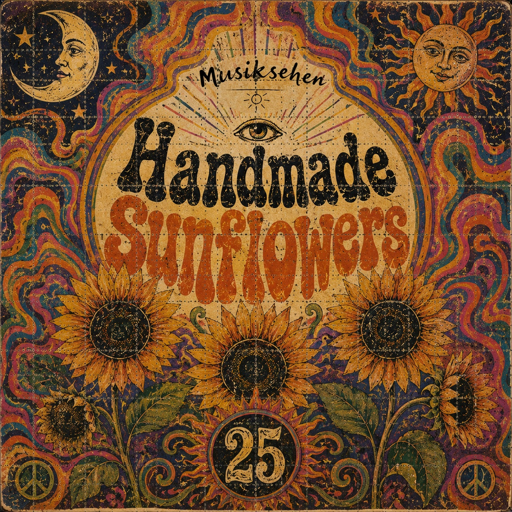
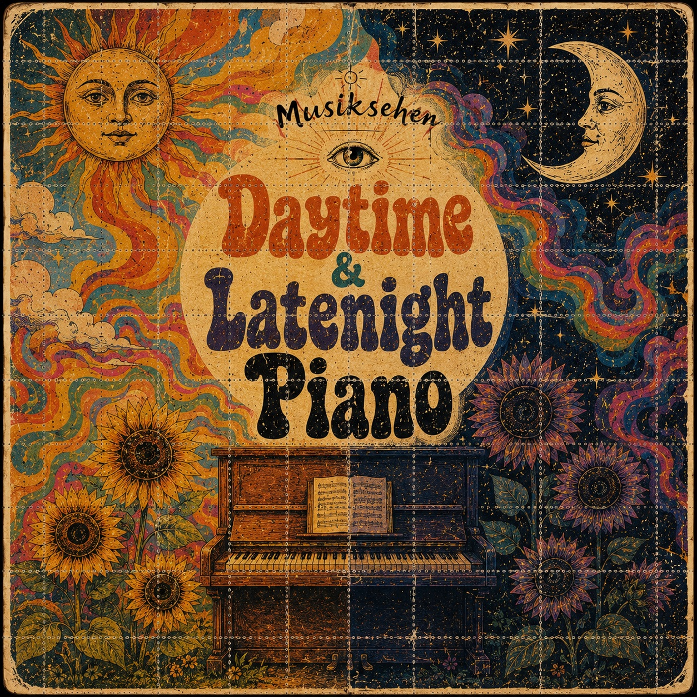
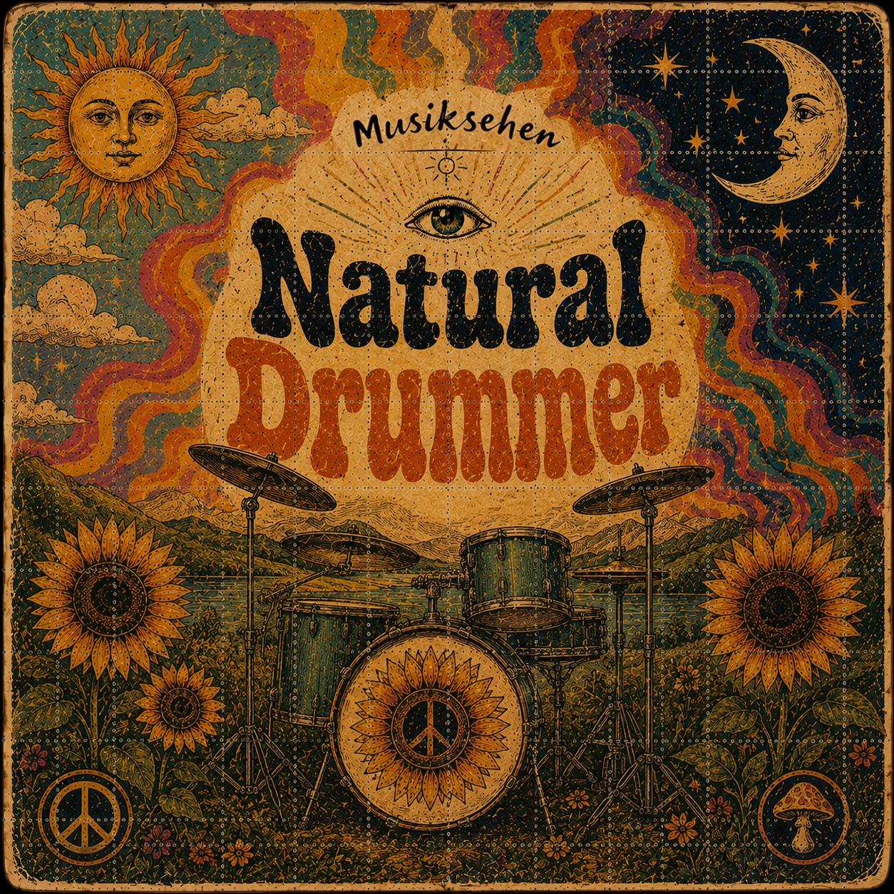
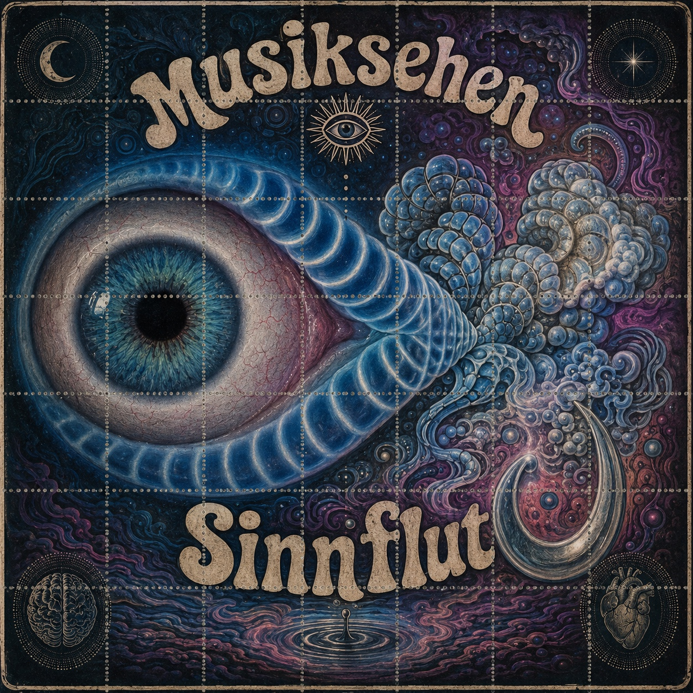
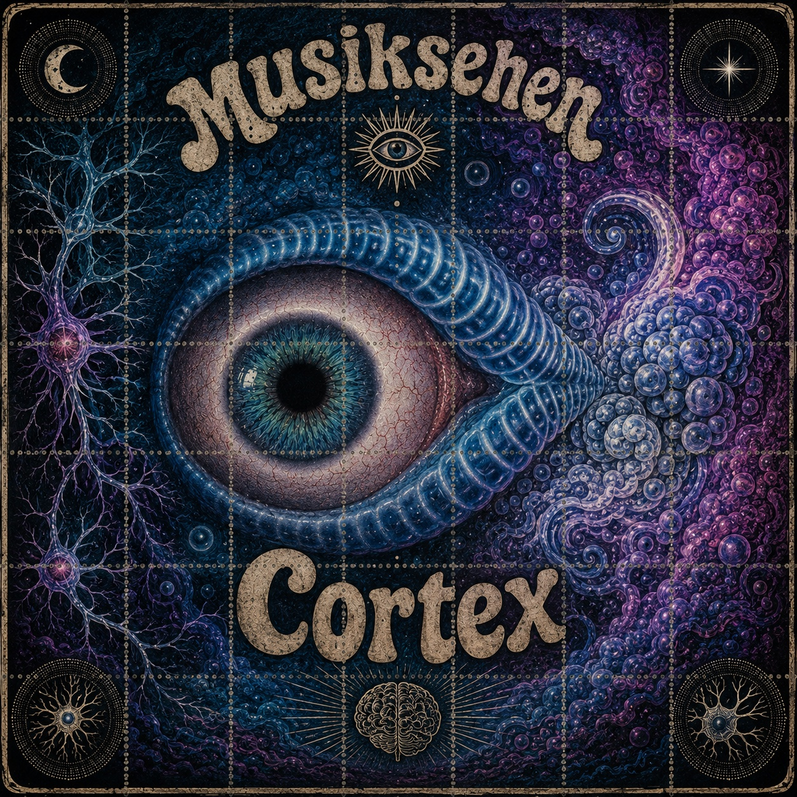
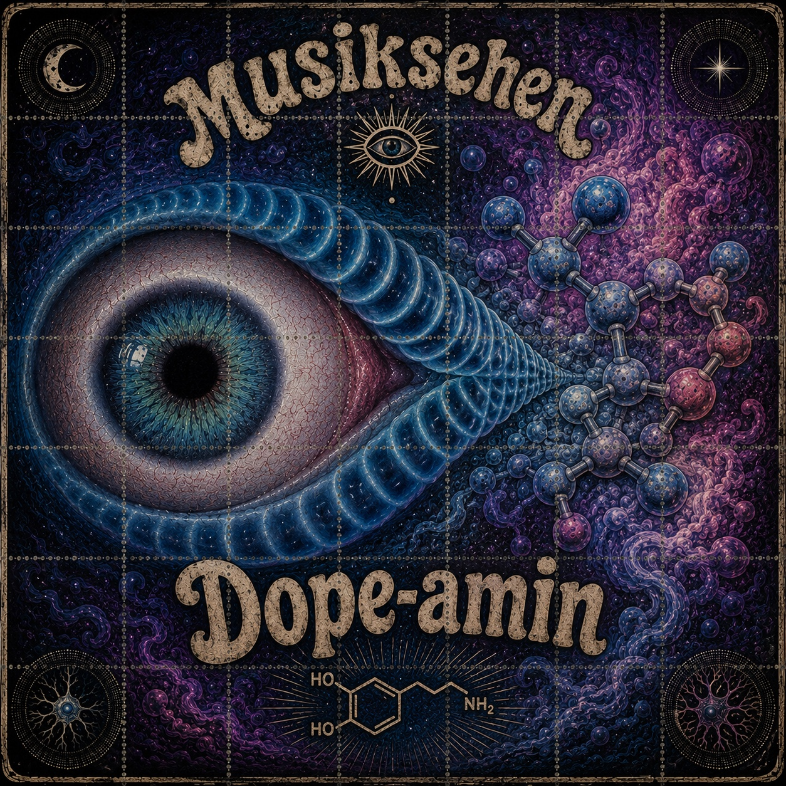

Musik · Klang · Wahrnehmung
MUSIKSEHEN
Das Musikprojekt von Thorsten Baierl.
Über Musiksehen
Ein Blick nach innen.
Musiksehen ist für Thorsten Baierl mehr als Musik – es ist ein Blick nach innen. Gefühle, Erinnerungen und innere Zustände werden zu Klang; Rhythmus und Melodie bewegen sich zwischen Dunkelheit und Euphorie, Chaos und Klarheit, Realität und psychedelischer Wahrnehmung.
Neue Single · 15. September 2026
Dirty Shit
Die nächste Veröffentlichung von Musiksehen. Links zu den Streamingdiensten werden ergänzt, sobald die Single verfügbar ist.
Ausblick
Kommende Arbeiten

Handmade Sunflowers

Daytime & Latenight Piano

Natural Drummer

Sinnflut

Cortex

Dope-amin
Künstlerbiografie
Thorsten Baierl
Musiksehen ist für Thorsten Baierl mehr als Musik – es ist ein Blick nach innen.
Geboren in Stuttgart, begann seine musikalische Reise mit 13 im Hip-Hop, bevor ihn mit 16 die elektronische Musik in ihren Bann zog. Viele Jahre später veränderte eine manische Phase mit psychotischen Auswüchsen sein Leben grundlegend. In dieser Zeit zerstörte er sein gesamtes Musikarchiv. Auf die Manie folgte eine schwere Depression – und irgendwann die Entscheidung, musikalisch wieder bei null anzufangen.
Aus diesem Nullpunkt entstand Musiksehen. Gefühle, Erinnerungen und innere Zustände werden zu Klang; Rhythmus und Melodie bewegen sich zwischen Dunkelheit und Euphorie, Chaos und Klarheit, Realität und psychedelischer Wahrnehmung.
Musik war dabei immer mehr als Ausdruck. Sie ist Heilung und ein Anker im Hier und Jetzt – etwas, das die Gedanken bündelt, Gefühle hörbar macht und zurück auf den Boden der Tatsachen führt.
Autor